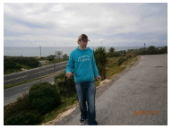

Grib Des Bois
autiste lvl100(SIC) , cuisinier et assistant coupeur de citrons a La pizza , Ericeira , Portugal
Facebook ici

Mon experience
Chez jgriboulet quand tu te fais vraiment trop chier (donc pas souvent) tu pex des cours sur openclassroom.com et une connerie en streaming sur le deuxieme ecran.
- De 2005 a 2016 autiste lvl100(SIC) , cuisinier et assistant coupeur de citrons a La pizza , Ericeira , Portugal.
- avant ça: pas grand chose
Mes Skills
- je fais un bon petit tournedos pas trop piqué des vers
- j ai quelques vagues bases de html, de programmation en c++ (mais il est loin le temps des cerises, meme en ayant rafraichi mes idées l annee derniere sur openclassroom.com
- je suis familier, a des degrés divers, avec pas mal de langues, notamment
- français (langue maternelle)
- anglais (lingua franca anywhere, anytime)
- portuguais,et par extension, son frere l espagnol mutuellement intercomprehensible avec un peu de pratique
- allemand , sous reserve de le retravailler un peu
Mon education
- En manque de. D ou openclassroom.com
That's one small step for man, one giant leap for mankind.